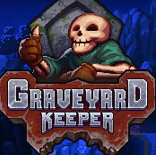
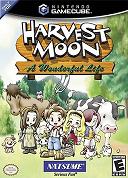
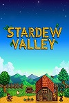

| Games | Summary | Play Time | Rating | Completion |
|---|---|---|---|---|
|  | In this delightfully weird game, you are sent into an alternate dimension in which you are tasked with keeping a graveyard, and running the morgue all while trying to find your way back home with the not so helpful advice of a talking skull |
52 hrs | ♥♥♥♥ | not yet completed |
|  | This is one of my all time favorites here you move from
the city to a run down farm lot that was left to you by your grandfather in his will you earn money to build up your farm, buy livestock, and equipment by fishing, mining or farming vegetable you can also choose a girl to marry and make her fall in love your appearance changes as the years go by and there are many different endings depending on how you play the game my ending was dying of sickness in old age from staying out in the rain to much |
Way to much time to count | ♥♥♥♥♥♥ | Yes and working on another completion |
|  | Much like harvest moon you inherit a farm from your grandfather and must spend time and money to fix it up while making friends with the villagers and finding someone to marry |
82 hrs | ♥♥♥♥♥♥ | Not yet completed no end in sight |
| All ratings based on a 1-6 heart scale | ||||